Learning Leadership, Game Design and World Building
during 7 years of being a DM in DnD
DnD is more than just playing!
Group dynamics arent always easy. People going rogue or annoying their fellow players is something you have to be ready to deal with. If you want your campaign to last, you need to be ready to deal with critique and make hard decisions. When a player becomes a problem or the group gets too big you have to be ready to cull the herd or change the story you already put all your heart into. It requires a lot of people skills and dedication to make it work.
From storywriting over worldbuilding to actually making maps and the rules for encounters. If you are experienced in DMing for a DnD group like me, you very well know that you can really dig your teeth into preparation. While improvisation is a big part of the game, most of the time investment for me has always come in the pursuit of perfecting what my players experience.

Making my own maps
As crazy as it might sound, I have never used a premade map or adventure book for my campaigns. For many years now I have written my own storylines, crafted my own world and put it to paper (or screen in this case), so all of the maps you see here are made by hand, by me using an application called Dungeondraft.
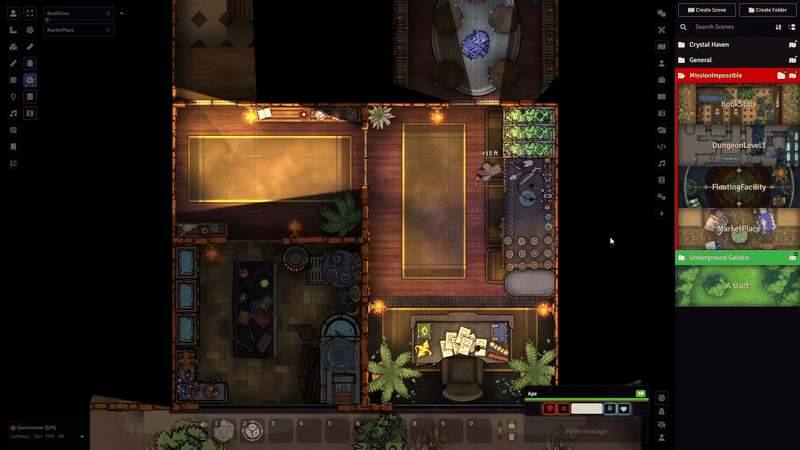
Learning to create dynamic environments, using sight to guide interest
DnD in person is easy. You use a paper to cover up the map and you can just point and describe. But give the player autonomy and the ability to move and you have a whole different problem. You suddenly have to guide the player using visuals and theming. If the environment doesnt fit the mood or description, it breaks immersion.
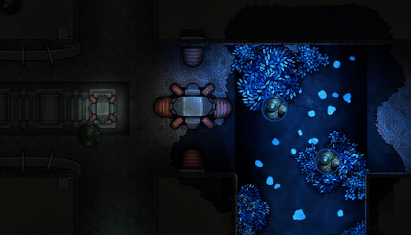
Scale
Over time my maps have become more and more detailed and ambitious. Talking more about the problem from before, a big issue that comes with playing DnD using something like a VTT (Virtual Tabletop) is that it restricts the best part of DnD - Doing absolutely anything you want. So to enable freedom and exploration, a lot of planning needs to go into the preparation of a map.
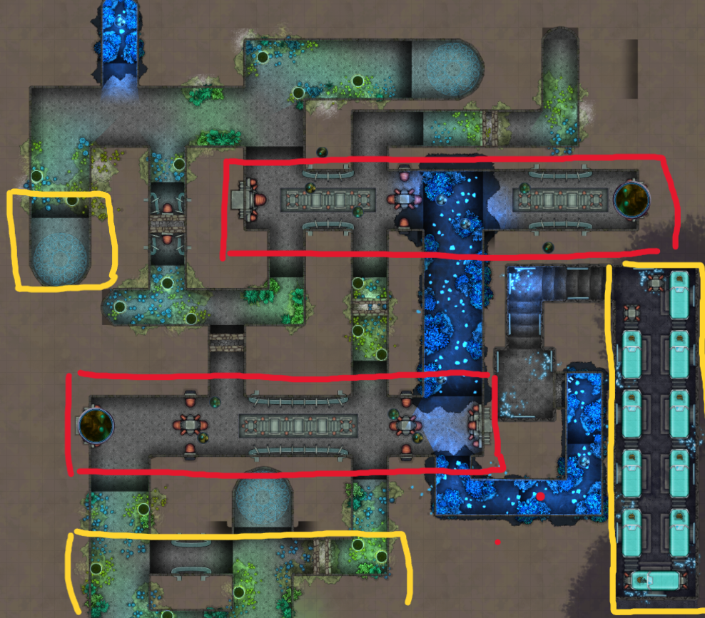
Storybeats and points of interest
So maps need to enable freedom, look interesting and guide the player. To do so, I use storybeats and points of interest to guide the player and make the map feel alive. These need to be clearly separated to enable tension to rise or fall and interest to grow.
(Yellow indicates storybeats, while red areas mark more tense encounters)
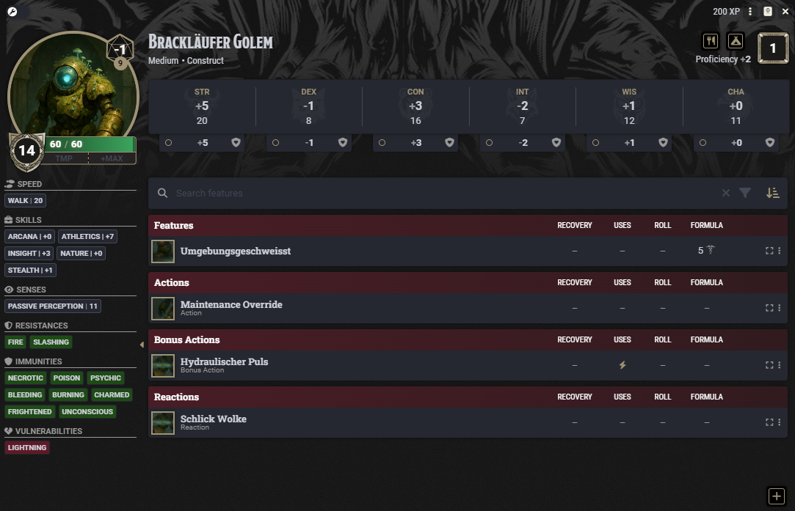
Rules and logic
Simple encounters where both the player and enemy have little incentive to do anything but simply attack back and forth are boring. Aside from map design, its important to make encounters more dynamic. Something I always try to integrate into my monster design is environmental effects, sidegoals like opening drains mid battle to stop from drowning or abilities that push and pull the players out of position.
In summary
DnD has taught me many things about storytelling, game design and worldbuilding but also people and organizational skills. Finding the right people with motivation, planning times to meet up and constantly adapting to changes in plans and interests are some of the greatest challenges of being a DM. It has been one of the most fun ways I have developed some of the skills I use in my current projects and work and it is something I will always hold dear to my heart.
Map Gallery
A collection of some of the maps I've created for my campaigns.
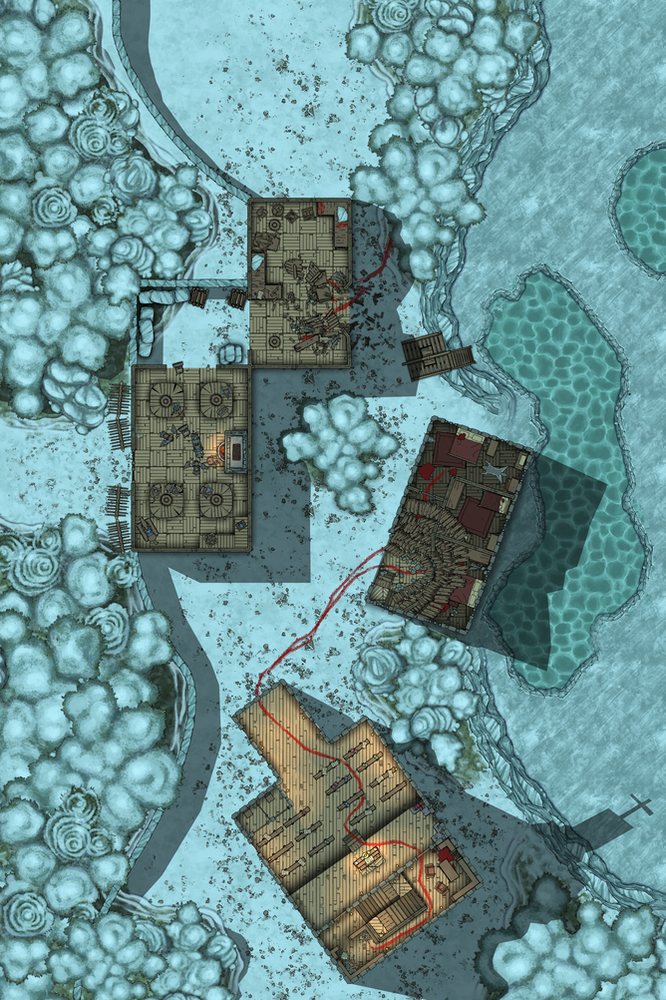
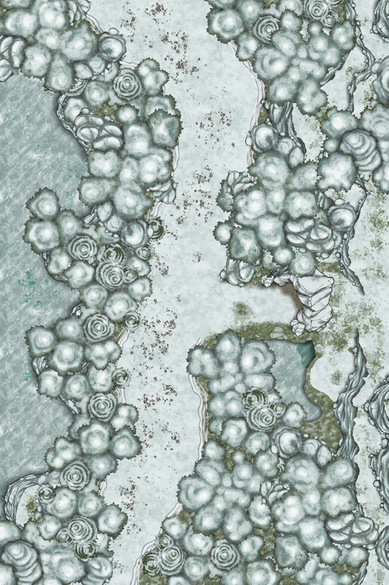
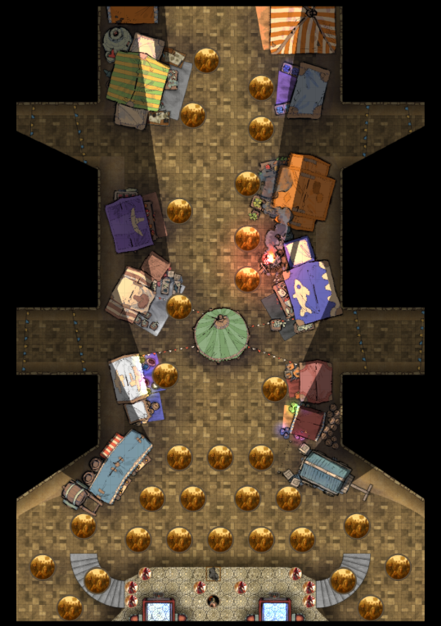
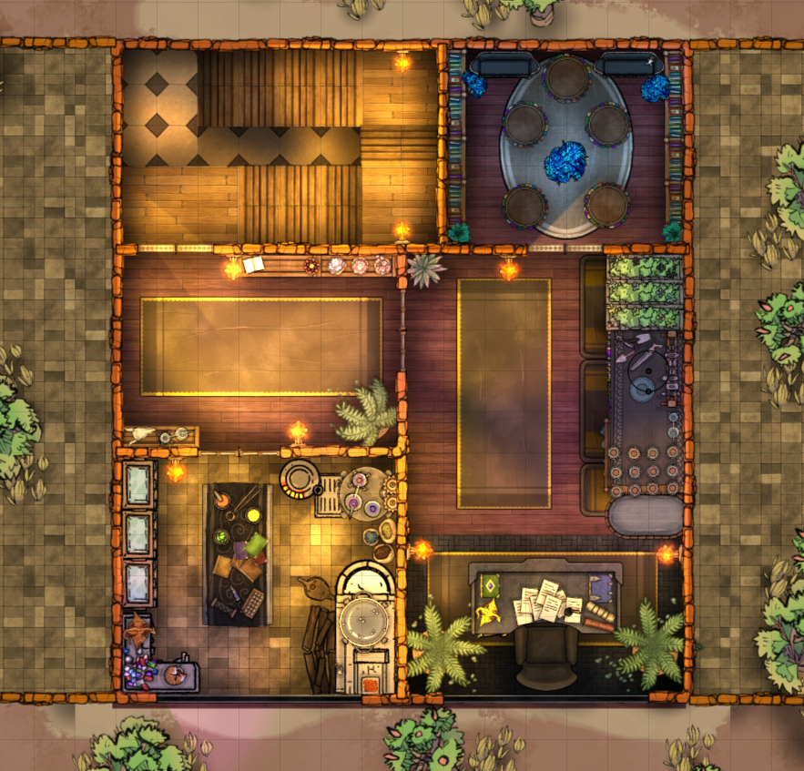
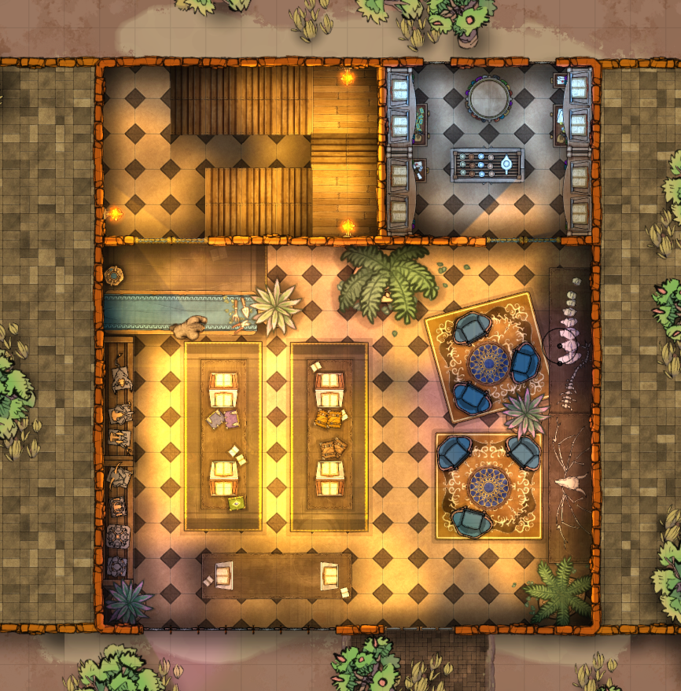
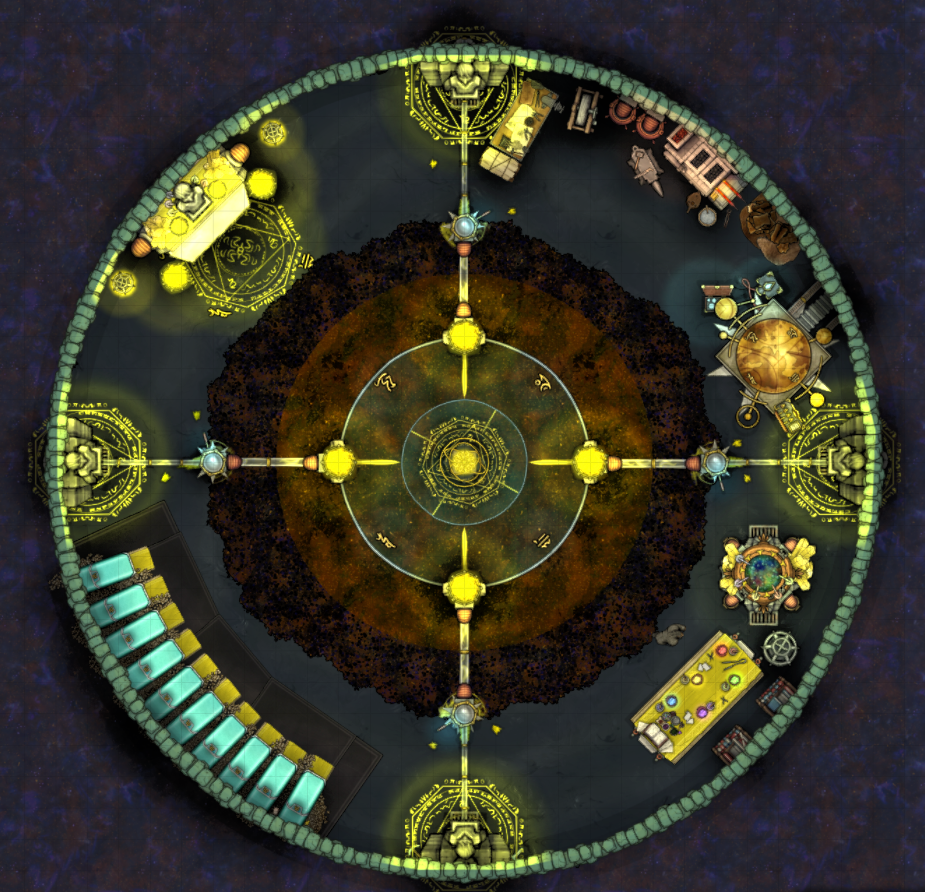
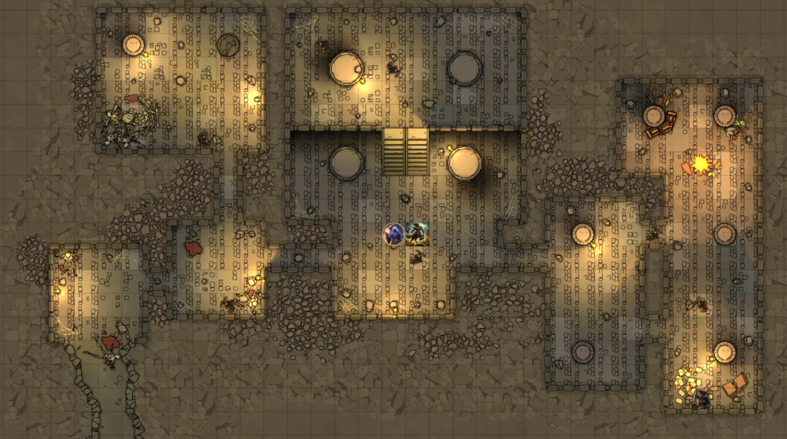
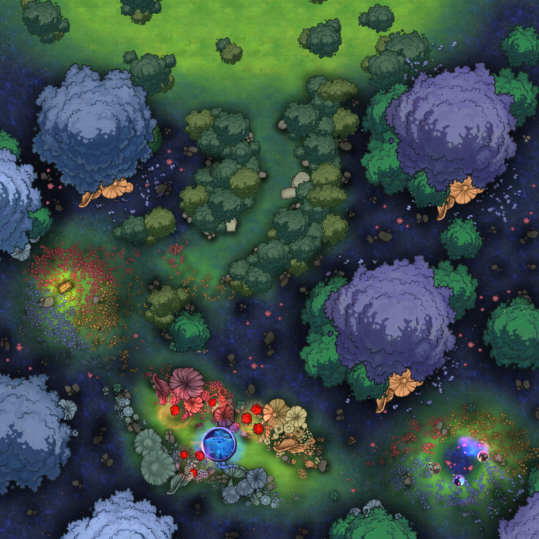
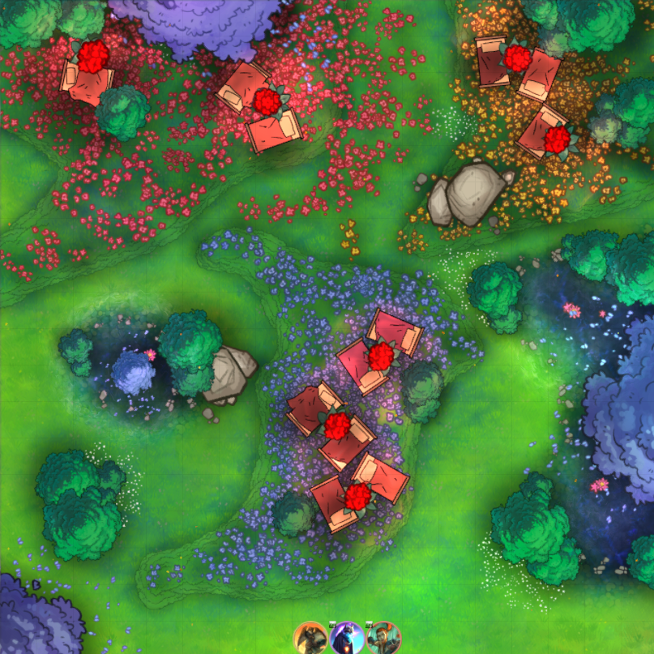
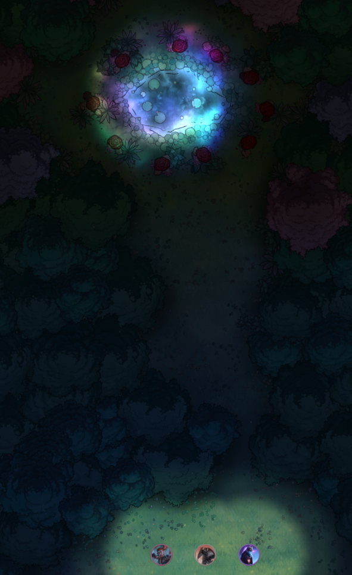
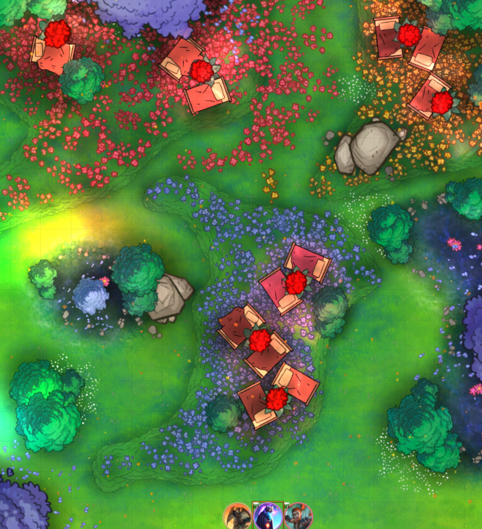